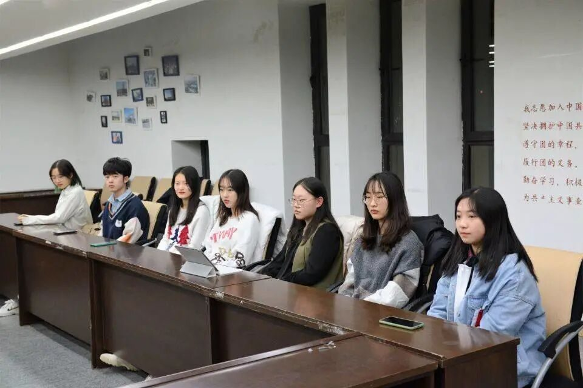
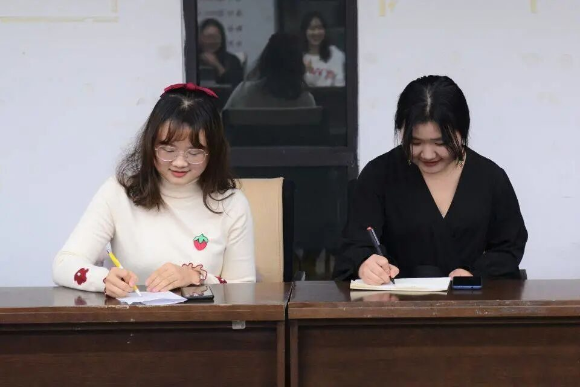
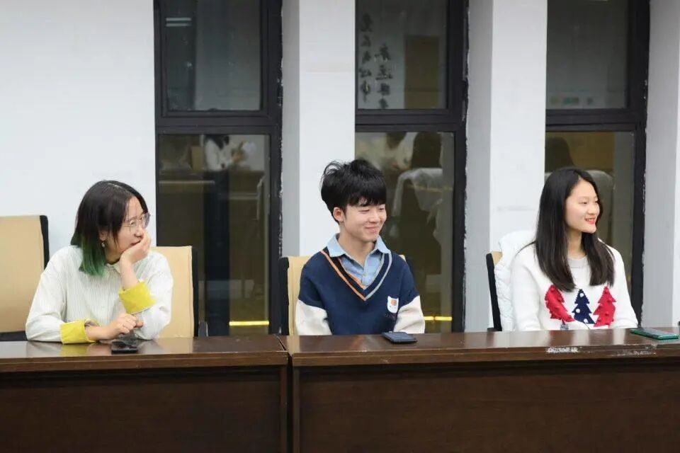

【行者无疆 聆谂丝韵】团队见面会

——第八期行者无疆见面会

初冬寒天，朔风凛冽，
行者十五，共聚欣欢。
与君初相识，犹如故人归。
大漠孤烟直，吾辈志将循！
这场每位行者翘首以盼的见面会，在本期带队队长康艳虎的幽默谈笑间渐渐在我们面前铺展开。本次文化调研之旅我们将与9位老队员与6位新成员携手同行，探索这苍茫广袤中积淀的历史与风情。随后，各位成员依次介绍自己的性格爱好与工作态度，并表达了对行者这个大家庭的向往与热爱。

队长康艳虎介绍了本次的调研主题——丝绸之路文化价值及其对人文精神的影响，并简要介绍了本次调研的主题与形式，行者，是对于远方不惧前行，对于热爱渴望探寻的孜孜不倦的追风人。随后，各部门组长介绍了本部门的职能与任务，方便了今后的交流学习，并为我们的文化之旅铺下了第一块坚固的基石。


行者无疆
聆谂丝韵

介绍完毕，考验随之轰轰烈烈的到来，滚雪球记名字真是让不少人，拜倒在大脑的石榴裙下。于是乎，将近晚上十点的大盘月夜下，此起彼伏的歌声四面传来。是的，那正是行者们对此次调研之旅满怀的期待。
“天使之眼”的小任务，让行者们对接下来的旅程再生新奇的情感；信笺做使，墨香为媒，沉甸甸的书信带着“老·行者”的希冀，传承行者无疆的信念，给本期的行者们带来无惧坎坷的勇气与一往无前的干劲。
志无休者，虽难必易，
行不止者，虽远必臻。
十之又五，日夜不舍，
丝路驼铃，共赴前程。
我们感念，我们珍惜，
或许，未来有荆棘，
或许，未来有艰险，
但我们相信，
行者自强，
行者无疆！
来源 | 行者无疆实践团
文字 | 温兆琪 苏亚男
排版 | 张清雅
审核 | 康艳虎 张清雅 胡至鸿
行者无疆实践团
QQ：2758025831

随行者一起认识世界
长按二维码